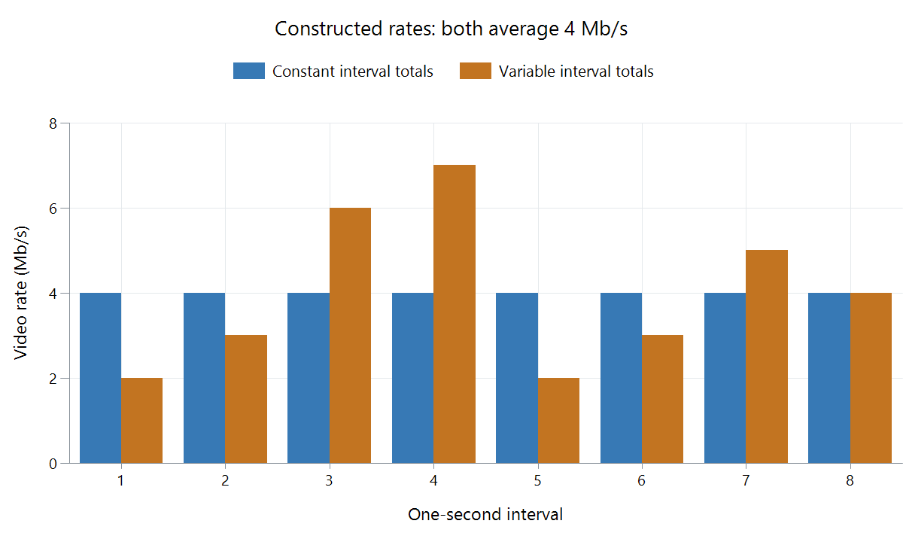

Constant Bitrate Video Encoding
Constant bitrate encoding controls video output toward a specified rate over the encoder's buffering model.
A channel supplying 4 Mb/s can deliver four million bits in one second. Constant bitrate (CBR) encoding controls the video around a selected rate and its buffering requirements so that delivery can be planned predictably.
Pictures still require different amounts of data. A keyframe may establish an entire scene; a predicted picture may mainly describe what changed.
Supply a large picture over time
Suppose one coded picture contains one megabit. At 4 Mb/s, supplying it takes:
1,000,000 ÷4,000,000 =0.25 second.
A 30 fps presentation interval is only 33.33 ms. The complete picture therefore cannot be expected to arrive from an empty buffer solely during its own display interval. Its data must have been supplied ahead of its decoding deadline.
Smaller surrounding pictures leave more opportunity to build that buffered supply. The model limits both data rate and how much data can be retained. VBV follows the occupancy calculation in detail.

The blue series uses equal one-second totals as a simple illustration. Actual CBR control need not make every one-second bucket or individual frame identical. Both plotted allocations contain 32 megabits over eight seconds.
Rate control changes the picture description
The encoder estimates how many bits a candidate picture description will need. As the available budget tightens, it can increase quantization strength or choose a less expensive coding representation. After encoding, the actual number of produced bits updates its rate-control state.
If a difficult scene needs more data than the permitted model allows, that feedback must affect the representation. Fine texture can be simplified or reconstructed less precisely. Easy scenes can meet the same delivery requirements with smaller corrections.
This is why CBR places predictability in the data path while allowing picture fidelity to change with the source. It does not assign an equal-quality amount of data to every scene.
Strict output can include filler
An easy section may not need all the channel's allowed data to reach the intended coding result. Some implementations offer filler or padding to keep strict coded output at the required rate.
NVIDIA's NVENC API explicitly documents filler/padding controls for that purpose. Their presence is an implementation and mode choice, rather than a requirement that all encoders calling a mode “CBR” produce identical bytes every instant.
Filler occupies data capacity without adding new photographed picture information. Counting it as part of encoded traffic and evaluating picture payload alone are different measurements.
Coded rate and transfer speed are separate observations
An Emby player can fetch data faster than it consumes it, then pause requests while buffered video plays. Its network graph can show bursts even when the video was encoded under CBR constraints.
To interpret the result, use the coded stream's data across media time, its rate-control settings and relevant buffer model. Network arrival across wall-clock time describes how that representation was transported. The buffer bridges those two schedules.
See Also
- Video Bitrate
- Variable Bitrate Video Encoding
- Video Buffering Verifier (VBV)
- Constant Quality Video Encoding